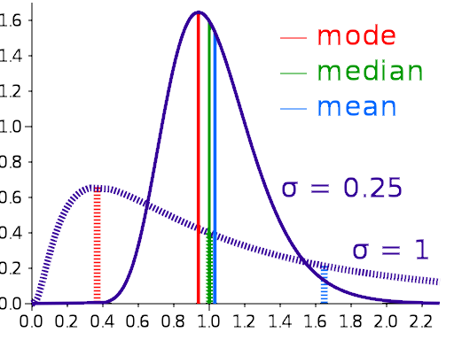

"Statistics is a branch of mathematics dealing with the collection,
analysis, interpretation, presentation, and organization of data."
-- Wikipedia
What Is the Subject Matter of Statistics?
Statistics is an attempt to deal with "the dark forces of
time and ignorance."
First arose to help gamblers, but it soon spread far beyond
that domain.
"Statistics investigates and develops specific methods for
evaluating hypotheses in the light of empirical facts. A
method is called statistical, and thus the subject of study
in statistics, if it relates facts and hypotheses of a
particular kind: the empirical facts must be codified and
structured into data sets, and the hypotheses must be
formulated in terms of probability distributions over
possible data sets." --
Stanford Encyclopedia of Philosophy
If we knew all of the details, we wouldn't need statistics!
Why Should We Study Statistics?
Forecast of a storm's probable path and likely
impact.
Statistics are employed in sports, gambling, business
planning, weather forecasting, science,
criminology, insurance, finance, big data...
Statistics can be used to trick us as well as to enlighten
us.
Understanding statistics is a great way not to get tricked!
Example: we see a terrible plane crash on TV. Now we are
afraid to fly. (Availability bias.)
Statistics helps us to see and
think more clearly.
Two Uses of Statistics
Descriptive
Descriptive statistics give us a picture of some data set:

Various measure of central tendency.
what value is most common?
what value is in the middle?
what is the average value?
how much do the values spread apart?
is it lop-sided?
Inferential
Inferential statistics allows us to move from observed data
to reach conclusions about data we haven't observed. That
may be because it is in the future, but it also
might be past data we can't get at.
An example of the latter: What was the composition
of the legions in the late Roman Empire? We only have
samples of this data, not all of it.
Inferential statistics
helps us determine what we can justifiably conclude from
the sample.
A Review of Mathematics
number line
absolute value
|-6| = 6
Think distance on the number line, not direction.